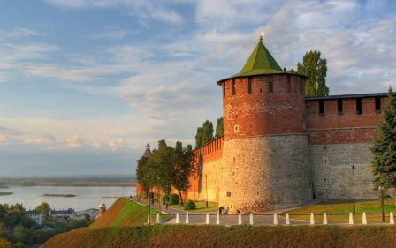
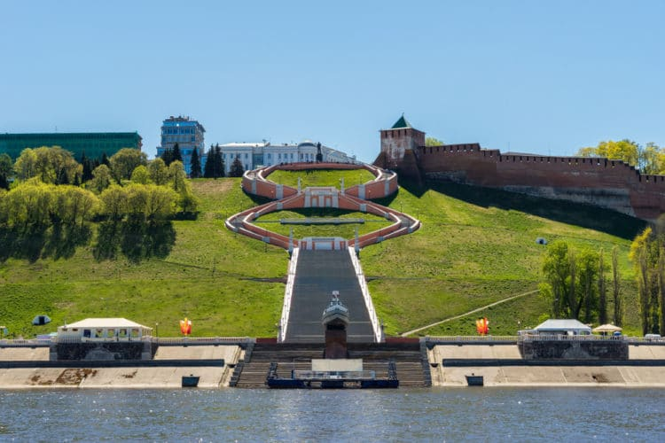

Православный Нижний
Нижний Новгород - город с почти тысячелетней историей, в том числе музыки.
Содержание:
Нижегородский Кремль
Нижегородскому Кремлю уже более 500 лет, и, возможно, это самая узнаваемая достопримечательность города.
Чкаловская лестница
Чкаловская лестница это тоже очень узнаваемая достопримечательность.